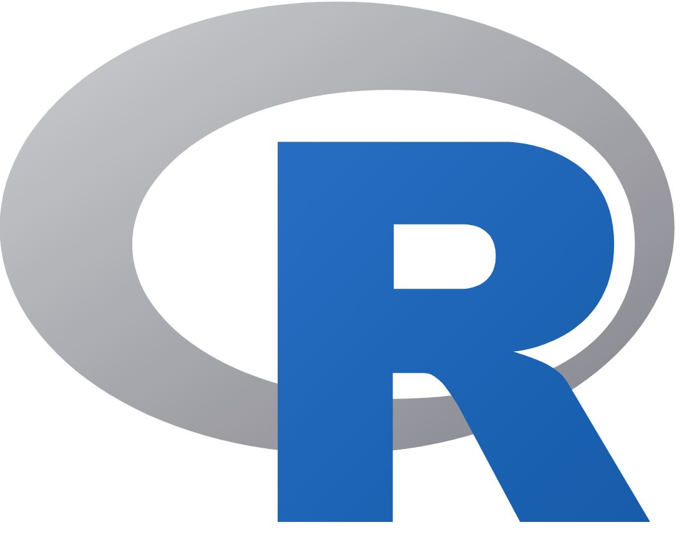

Introduction to R and RStudio
What is R?

Open source (free!) statistical programming language/software
It can be used for:
- Working with data - cleaning, wrangling and transforming
- Conducting analyses including advanced statistical methods
- Creating high-quality tables & figures
- Communicate research with R Markdown
It is constantly growing!
Has a strong online support community
Since it’s one programming language, it is versatile enough to take you from raw data to publishable research using free, reproducible code!
What is RStudio?
RStudio is a free, open source IDE (integrated development environment) for R. (You must install R before you can install RStudio.) Its interface is organized so that the user can clearly view graphs, tables, R code, and output all at the same time. It also offers an Import-Wizard-like feature that allows users to import CSV, Excel, SPSS (*.sav), and Stata (*.dta) files into R without having to write the code to do so.
R versus Others Softwares
Excel and SPSS are convenient for data entry, and for quickly manipulating rows and columns prior to statistical analysis. However, they are a poor choice for statistical analysis beyond the simplest descriptive statistics, or for more than a very few columns.
Why should you learn R
- R is becoming the “lingua franca” of data science
- Most widely used and it is rising in popularity
- R is also the tool of choice for data scientists at Microsoft, Google, Facebook, Amazon
- R’s popularity in academia is important because that creates a pool of talent that feeds industry.
- Learning the “skills of data science” is easiest in R
Some of the reasons for chosing R over others are are:
- Missing values are handled inconsistently, and sometimes incorrectly.
- Data organisation difficult.
- Analyses can only be done on one column at a time.
- Output is poorly organised.
- No record of how an analysis was accomplished.
- Some advanced analyses are impossible

Advantages of using R/RStudio for research
- It is free and open-source
- It is designed to make it easy to write and reuse code
- Makes it convenient to view and interact with the objects stored in your environment
- Makes it easy to set your working directory and access files on your computer
- Integrates with collaboration and publishing tools
Project Management and Workflows
The ability to integrate code and narratives is a major advantage of Quarto and the RStudio environment, especially considering the scientific process is naturally incremental, and many projects start life as random notes, some code, then a manuscript, and eventually, everything ends up a bit mixed together.
Quarto is a powerful tool that can’t be fully utilized unless your project documents, scripts and other files are well-organized. So, let’s take a look at RStudio’s features for managing projects and discuss some of the best practices when working with data.
Advantages of using RStudio for your research project
RStudio is the perfect tool for a reproducible research project. With a good project layout, you can make your life much easier:
- It will help ensure the integrity of your data
- It makes it simpler to share your code with someone else (a colleague, mentor, collaborator, etc.)
- It allows you to upload your code with your manuscript submission easily.
- It makes picking the project back up after a break easier.
- It makes your research reproducible!
Let’s give it a try!
- Create a project in RStudio.
You can create a new project in RStudio: 1. Click the “File” menu button, then “New Project”. 2. Click “New Directory”. 3. Click “New Project”. 4. Type in the name of the directory to store your project, e.g. my_first_project1. 5. Click the “Create Project” button.
Note that there are is a *.RProj file created in the project folder.
- Open an RStudio project through the file system
- Exit RStudio.
- Navigate to the directory where you created the project.
- Double click on the
.Rprojfile in that directory.
Footnotes
Keep a note of the location of the directory on your computer.↩︎